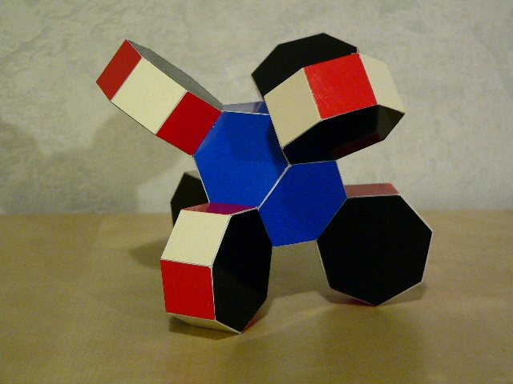
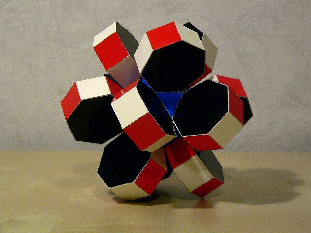

Polyhedra with regular 7-gons are not very common. On this page I gather a few of these.
The image shown above shows a polyhedron consisting of 6 heptagon prisms attached to the faces of an imaginary cube. The nice thing here is that alternating colours can be used for the squares, since for each prisms one square is not shown. To my surprise is was not possible to divide the alternating colours such that one set of four vertices of a tetrahedron is shared by squares with the same colour. Naturally one could use any uniform polyhedron with squares as a base.
For instance the model above uses the truncated octahedron as a base. There is a difference with the previous model though. In the former heptagons of two opposite prisms are lying in one plane, which is not the case here. But as a result both models have the same symmetry, which is based on a tetrahedron, more specifically: A4 x I. This is a lower order symmetry than the base.
The model above does keep the S4 x I symmetry of the base, a rhombicuboctahedron, since the prisms are attached to the squares that share just a 2-fold symmetry axis, instead of a 4-fold as before. It is possible to attach the prisms in two ways: pointing towards the squares and pointing towards the triangles. The above shows the former. The latter will lead to intersecting prisms.
2010-09-05